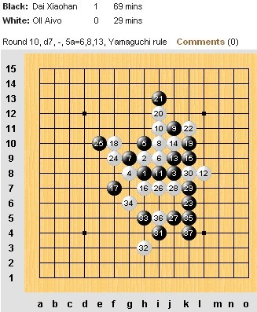
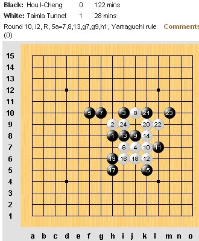
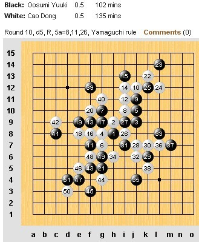
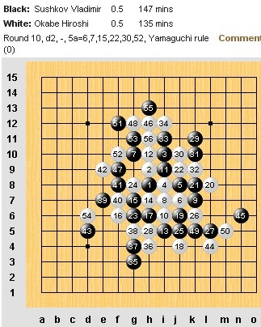
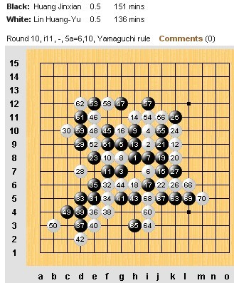
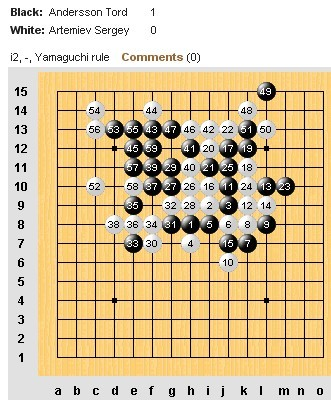

世锦赛第十轮冠军未出
作者：通讯员
原文网址链接：http://www.rifchina.com/Article/ShowArticle.asp?ArticleID=6473
第十二届五子棋世界锦标赛A组第十轮，中国选手戴晓涵率先取胜爱沙尼亚爱・欧艾沃(Aivo Oll )。爱沙尼亚特・泰姆拉 (Tunnet Taimla)取胜中华台北侯宜呈 (Hou I-Cheng)。中国选手曹冬战日本大角友希 (Osumi Yuki)；俄罗斯弗・苏切科夫 (Vladimir Sushkov)战日本冈部宽 (Okabe Hiroshi)；中华台北林皇羽战中国黄金贤三对选手相继成和。瑞典托・安德森 (Tord Andersson)最后时刻战胜俄罗斯谢・阿特米耶夫 (Sergey Artemiev)。
比赛还有最后一轮，冠军将在曹冬、林皇羽之间产生，现在双方分别以8分并列前茅。第十一轮曹冬对爱・欧艾沃，林皇羽对弗・苏切科夫将是关注的焦点，林曹双胜就得比小分，恐林占先机。冠军到底是谁让我们北京时间今天下午三点一见分晓。






 第1页
第1页蓝天。。。。
你又没看帖子就转过来了。这帖重了。。。。。。。。